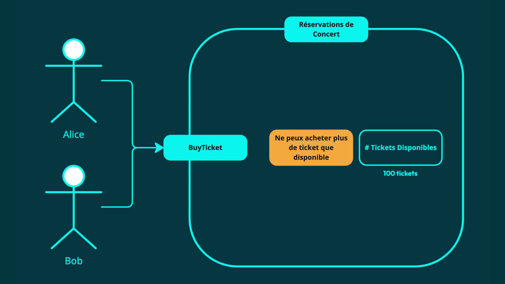

Exercice pratique
Exercice d'introduction
C'est juste un exercice d'intro qui servira pour les exercices d'après
Consignes :
- Créer un graphe d'objet correspondant au brief sur la gauche
- pas d'obligations de mettre des indications sur les flèches
- il n'y a pas de piège
- Durée : 5-10 minutes
A la fin de l'exo :
- si on a du mal à faire un "beau" graphe objet, c'est peut être qu'il y a un problème
- Que peut-on dire de ce graphe d'objets ? => il est "costaud", gros
- Et encore, on s'est arrété à ce brief là, qui pourrait être bcp plus complet
- si on transforme ce graphe en MPD, qu'est-ce que ça implique de récupérer un Journey ? Et qu'est-ce qu'on voulait récupérer comme information, ou faire à la base ?
- Comment fait-on en SQL pour charger tout l'objet Journey ? => une grosse jointure SQL => Bravo, tu viens de charger toute ta base
- Autre solution, utiliser le lazy loading, et le configurer par contexte pour ne pas tout charger. Inconvénient => on peut se retrouver avec des NullRef
- On ne peut pas partir de ce graphe pour modéliser le comportement de l'application
- Le graphe d'objet doit venir en complément de l'ES par exemple
- l'event storming permet de détailler les intéractions
- le graphe d'objet permet de spécifier un peu les data
Responsabilité
Protège les invariants d’un ensemble d’objets
Responsabilité
Délimite la concurrence du système
Exemple : un compte bancaire
- On veut retirer de l'argent de ce compte bancaire => 100€
- Et on a une règle, ne pas être à découvert => donc si j'ai 100€, ça passe
- on voit ici qu'on a
- une frontière (qui s'appelle le compte bancaire)
- des actions possibles (appelée stimulus)
- ce stiumulus (retirer de l'argent) va executer des règles métier et va faire en sorte que quelque soit le stimulus que tu vas envoyer, l'état du compte bancaire soit toujours consistant avec les règles du compte bancaire
- Dans notre cas, il fera en sortie qu'on ait toujours un minimum de 0€ sur le compte
- invariant = quelque chose qui ne varie pas => quelque chose qui doit toujours être vrai, quelque soit les circonstances. C'est une règle extrêmement rigide. (ex : une quantité ne peut être inférieure à 0).
- les invariants sont des règles métiers (mais les règles métier ne sont pas toutes des invariants)
- invariant = notion fondamentale en DDD => car ils vont guider le design de notre système
Exemple : un compte bancaire
- Alice et Bob veulent retirer de l'argent, qu'est-ce qui peut mal se passer ? Que la somme des deux retraits dépasse le solde du compte
- Comment éviter que ça arrive ? (solution, tu en tue un des deux :p ) => un système de sémaphore (ou autrement dit un lock)
- C'est à dire que le compte en banque va limiter son usage à une seule personne à la fois (pour contrecarrer le risque de violer l'invariant)
- Donc premier problème : lorsqu'on a des invariants, on est obligé de limiter la concurence dans notre système

Autre exemple : un système de réservation de place de concert (ou de train)
On va voir que selon le contexte, selon le besoin (toujours drivé par le métier), parfois on va vouloir remettre en question un invariant
- exemple : est-ce que c'est vraiment un invariant ? Est-ce qu'on ne peut pas vraiment acheter plus de tickets que disponible ? Que se passe-t-il si cela arrive ?
- est-ce qu'on peut faire de la survente ? (comme dans les billets d'avions, ou de train)
- un invariant est là pour bloquer la concurence d'un système. Mais que lorsque le besoin est d'avoir de la concurrence (ex : fort traffic), il faut éventuellement RELAXER ces invariants
Un aggregate est un pattern qui est intéressant ponctuellement, lorsqu'on a des invariants
=> si tu peux relaxer ton invariant, tu peux modéliser ton système autrement
Gardez vos Aggregates aussi petit que nécessaire
Gros Aggregate = Faible Concurrence
En effet, si tu charges un aggregate, tu met un lock dessus, et surtout TOUS les objets en dessous !
Mettre le faible concurrence en ROUGE !
Est-ce normal qu'on ne puisse pas me rembourser de l'argent pendant que je suis en train de faire un paiement ?
Donc la consistence du système va avoir un impact direct sur la façon dont on va modéliser nos aggregates (et donc notre système)
Responsabilité
Le design est guidé par les UseCases et les Invariants
Démonstration
Fin du cours 1 (1ère session sur les Aggregates)
Time code : 1h50
=> discussion intéressantes à reprendre dans le cours sur le TDD (et peut être l'event storming)
Exercice pratique
Time code : 2h02
Consignes :
- On a les usecases, les règles métier, et la concurrence nécessaire
- Créer les aggregates
- On se concentre sur la délimitation
- Durée : 20 minutes
Correction : timecode 2h05 => solution 2h14
Règle 1
Designer vos Aggregates à partir de vos invariants
Règle 2
Garder les Aggregates aussi petit que nécessaire
Règle 3
Référencer les autres Aggregates uniquement par leur ID
Responsabilité
Représente un évènement émis dans notre domaine
Responsabilité
Un fait immuable, quelque chose qui s’est produit
Responsabilité
Important dans le cadre du domaine
Responsabilité
Langage métier
LA DERNIERE REGLE DES AGGREGATES
Règle 4
Utiliser l’Eventual Consistency pour mettre à jour d’autres Aggregates
Transactional Consistency : tout est mis à jour dans une même transactionEventual Consistency : certains Aggregates sont mis à jour ultérieurementEventual ne signifie pas “éventuellement” “tôt ou tard” ! On peut parler de consistence retardée ou à retardement
Dans 5ms…
100ms…
1 seconde…
1 minute…
Est-ce grave si le compte bancaire reflète le dépôt après avoir déposé les fonds ?
Dans 5ms…
100ms…
1 seconde…
1 minute…
1 jour !